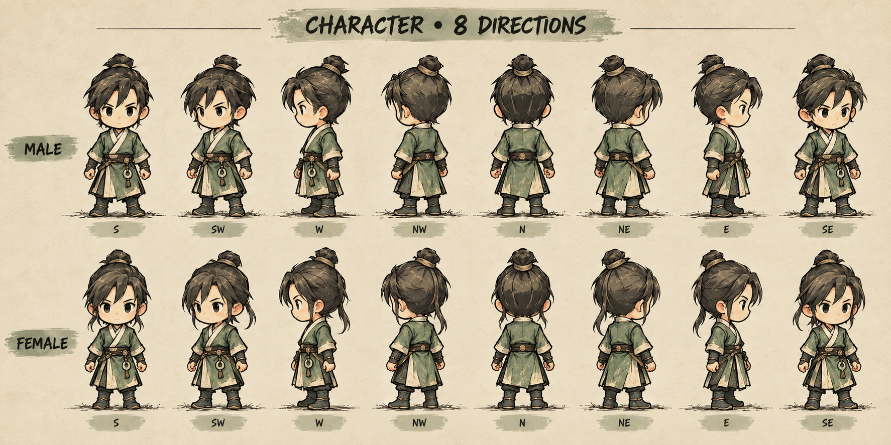

GuMaster2D · Bảng duyệt mỹ thuật · 11.10.2026
Cổ sư, nét mực và giấy.
Nhân vật cũ phát triển chi tiết hơn · Nam/nữ · 8 hướng · Đổi trang phục · 4 Cổ
Concept 02 · Chờ duyệt

Mặt trước, chéo, ngang và sau được vẽ riêng. Hai body dùng chung tên khớp và timeline, có hình mặt/thân/fit riêng.
Hướng chéo còn gần frontal; cần khóa rõ góc đầu/thân khi vẽ source. Đây là concept, chưa là head asset đúng pivot.
Chuỗi hình là nghiên cứu keyframe, chưa phải animation chơi được. Nhân vật trong game, nón/giày, save và icon kỹ năng chưa được thay bằng bộ này.